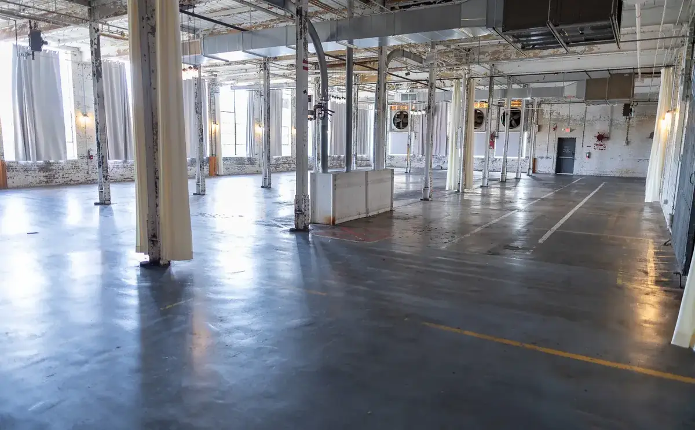
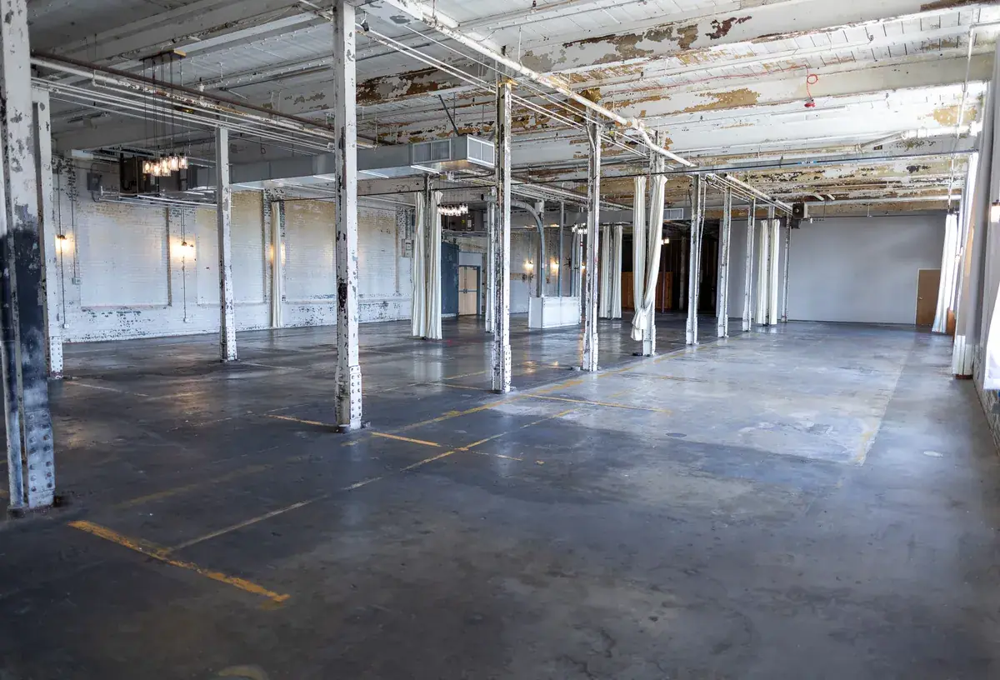
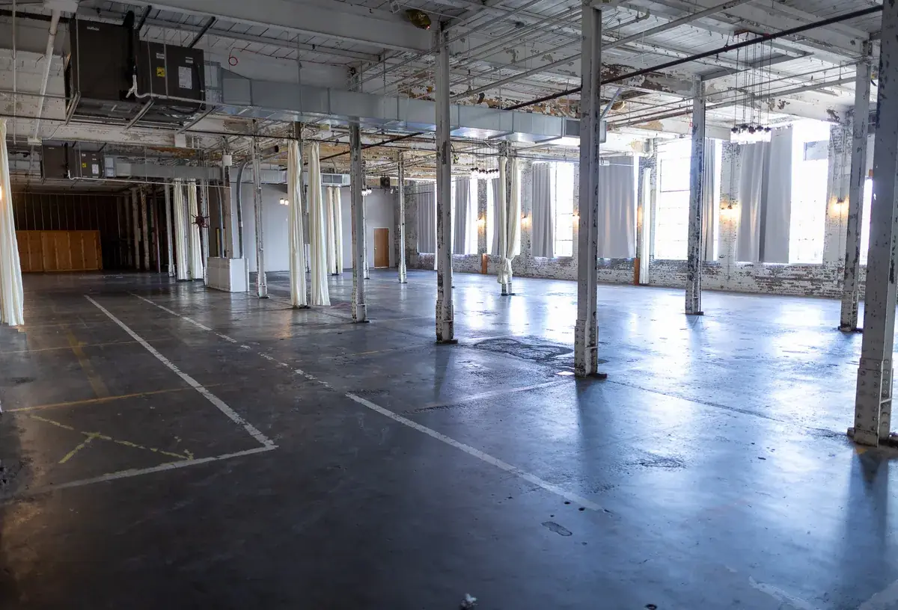
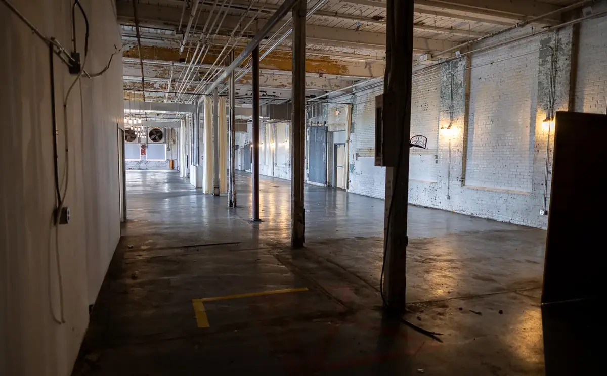
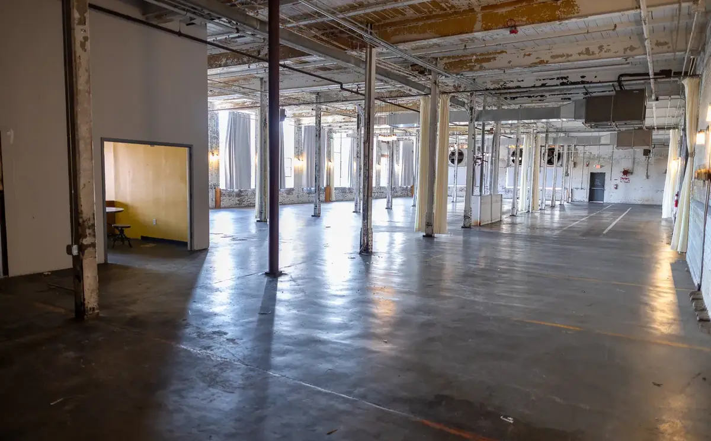
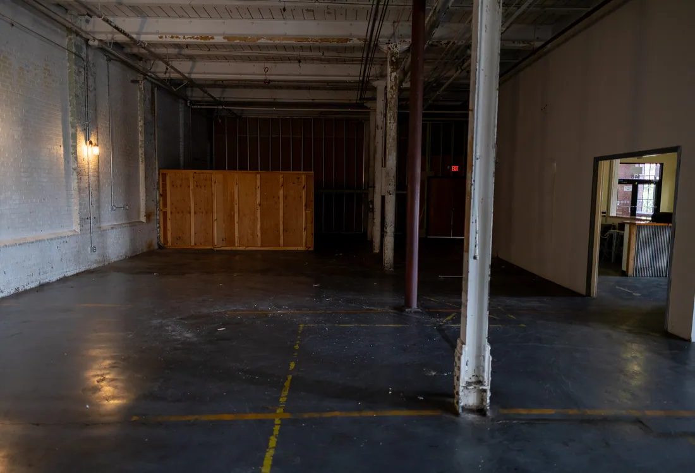
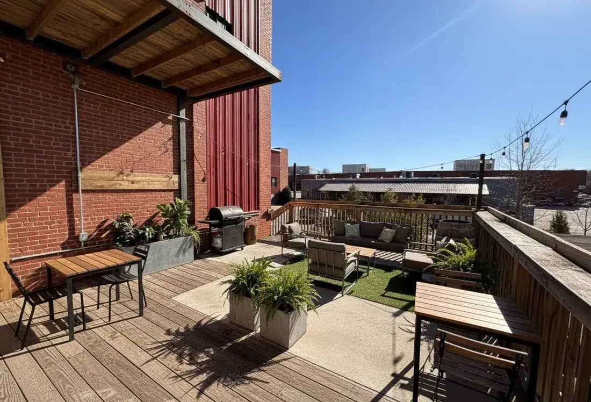
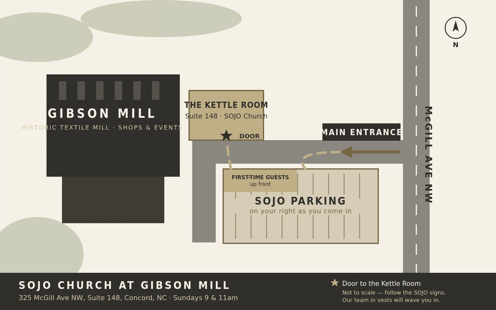

Our New Home
The next chapter
Gibson Mill
First Sunday in the new room: Sunday, September 6, 9 & 11am.
Know · Grow · GoOne room where a stranger meets Life, a family gets formed, and a church gets sent. That is what we are building at the Mill.
A letter from Pastor Corey
He doesn't restore
things halfway
SOJO family — I've been dreaming about this moment for a long time.
There is something deeply sacred about a community gathering in a historic space. A place that carried stories before us and will carry ours forward for generations.
Scripture says it plainly: be fruitful, multiply, fill the earth. That's not just a command about land. It's a declaration about what God does with His people when they say yes. He restores. He expands. He takes what was worn down and breathes something new into it. That is our story.
Here's what it means in real terms. We're moving into a space twice the size of what we have now. Our room grows from 230 seats to 400+. Our kids and youth spaces grow by 400% — safer, more beautiful, more intentional than anything we've had.
Some of it lands on day one. Some of it doesn't. The permanent kids space and a fully built-out coffee shop are both targeted for early 2027 — a coffee shop open through the week, where somebody who has never set foot in a church finds us on a Wednesday afternoon. We're telling you the timeline honestly because you deserve that more than you deserve a nice rendering.
I believe with everything in me that God put this in front of SOJO for a reason. So pray over it, then ask Him one question: what is my part in this?
With faith and gratitude,
Pastor Corey
Corey Alley · Lead Pastor
August 2026 · The shell
This is what
it looks like
right now
Bare brick. Columns painted over a dozen times. A hundred years of somebody else's work still on the ceiling. We're not covering that up — we're building inside it.
The worship roomWhere the chairs go. Tall windows down the long wall, original steel columns left exactly where they are.

Looking down the floorThe full length of the space, front to back. Every column is original to the mill.

The ceilingOriginal timber and hanging fixtures. We are keeping them.

The window wallDaylight down one whole side. The curtains stay.

The hallway inThe walk from the main entrance. Follow it to the end and Guest Services meets you.

The doorwayFirst look into the room from the hall.

Kids and youth, framedThe build-out in progress. Permanent kids space targets early 2027.
Photographed August 2026. The framing you can see going up is the kids and youth build-out.
The plan
And this is
what it becomes
Same bones. Same brick. Chairs, sound, light, and four hundred people who didn't have a room big enough until now.

The worship room400+ seats, up from 230. Ready September 6.

Gathering spaceBrick, daylight, long tables. Room to sit down with somebody after a service.

The café areaThe fully built-out coffee shop is targeted for early 2027 — not open on day one.

Outside the doorOur signage on the mill brick. This is what you look for from the parking lot.

Open airOutdoor space at the Mill. Phased in after the move.
These are renderings, not photographs. Construction is ongoing and areas open in phases — the captions say which.
Getting there
How to find
the room

Gibson Mill site map — SOJO parking and the main entrance
Read the map
Come in off McGill Avenue and you are looking at the whole property. SOJO parking is to your right as you come through the main entrance, and our team will be out there in vests pointing you in. First-time guest spots are up front.
Our door sits beside the City Club entrance, under the large SOJO Church sign mounted at the top of the building. Inside, walk straight down the hallway to the end.
Not sure? Roll your window down and ask anybody in a vest. That is literally their whole job on Sunday morning.
Put this in your GPS
325 McGill Ave NW, Suite 148, Concord, NC 28027. If your map app is confused, search “Gibson Mill Concord” and head for the main entrance.
Park to the right
Come through the main Gibson Mill entrance and SOJO parking is primarily on your right. Follow the SOJO directional signs — our team is out there and will point you in.
Look for the sign beside City Club
Our entrance sits right next to the City Club entrance, with the large SOJO Church sign mounted at the top of the building.
Walk straight to the end of the hall
Once you're inside, keep going down the hallway to the end. Guest Services will meet you there and walk you wherever you need to go.
Kids check in just off the café
Nursery is off the café area on your left as you come through the main doors. First-time families check in at the guest station outside the SOJO Kids entrance.
Questions about
the move
When is the first Sunday at Gibson Mill?
Sunday, September 6, 2026 — services at 9 and 11am, same as always. Through August 30 we're still meeting at 848 Union Street S, Concord, NC 28025.
Are service times changing?
No. Sundays at 9:00 and 11:00am.
Is the kids space finished?
Not yet — and we'd rather tell you that than surprise you. The permanent SOJO Kids space is targeted for early 2027.
Until then we have a dedicated kids area right next door to the worship room, plus the nursery off the café area. It's safe, staffed, background-checked, and ready for your kid on day one. It's just temporary, and we'd rather you hear that from us than figure it out in the hallway.
What happens to the old building?
We finish well and we say thank you. Union Street held six years of baptisms, first visits, and answered prayers. We're not leaving it behind so much as carrying it with us.
Is there really a coffee shop?
Yes — but not yet. A fully built-out coffee shop is the plan, and we're targeting early 2027. It's a real commitment, not a maybe. It's just not something you'll be able to order from on September 6.
When it opens it'll be open through the week, not just Sundays. That's the whole point — we want somebody who'd never walk into a church on a Sunday to find us on a Wednesday afternoon instead.
How can I help?
Two ways, and both matter. Serve on a Sunday team so the new room feels like home from day one, and give toward what it costs to finish the build. Find your spot →
Mark the date
September 6
9 & 11am
The Kettle Room at Gibson Mill
325 McGill Ave NW, Suite 148 · Concord, NC 28027